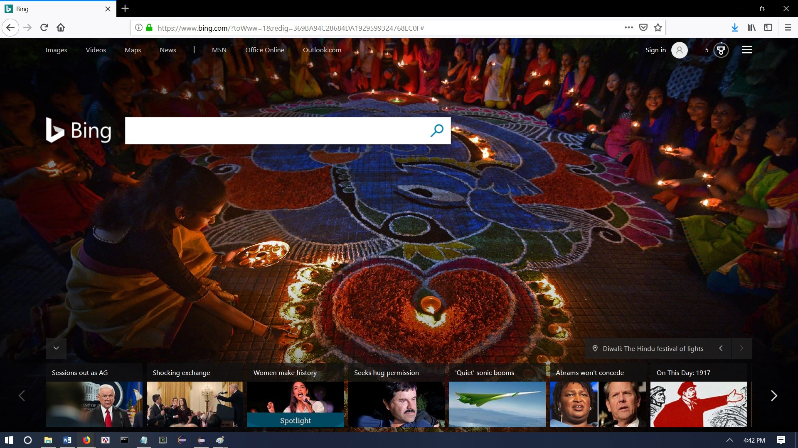
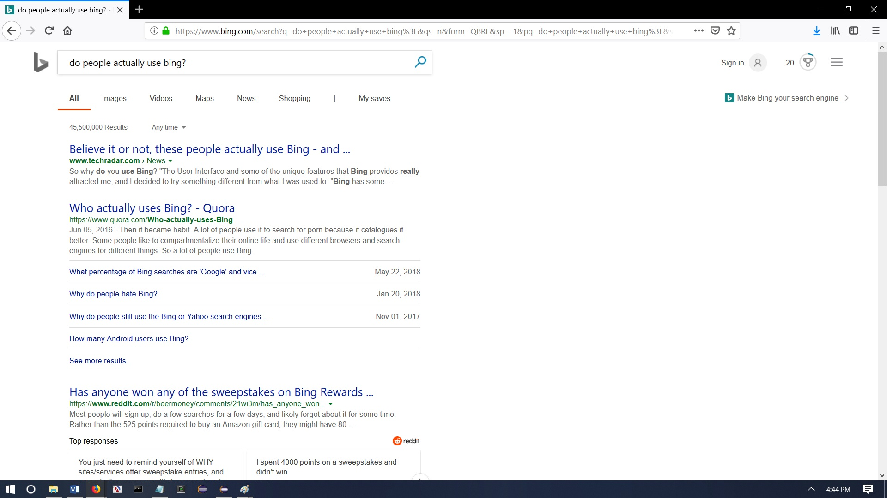

Here’s what Bing looks like.
The homepage always has a different background picture each day.
Here’s what happens after you search for something.
Bing would be a runner up to Google mostly because they are copying what Google does well all the damn time. It’s as if Google is Bing’s cooler older brother, and Bing just wants to have the same recognition that Google gets. Bing, though, just can never manage to capture the same charisma that his brother has. As a result, the homepage can be an issue for some because it has too much going on. While it is very similar to Google, its search is not as extensive. The only reason why you would use Bing is the rewards program. Maybe, you can delay a Windows 10 update by a couple hours as a reward.